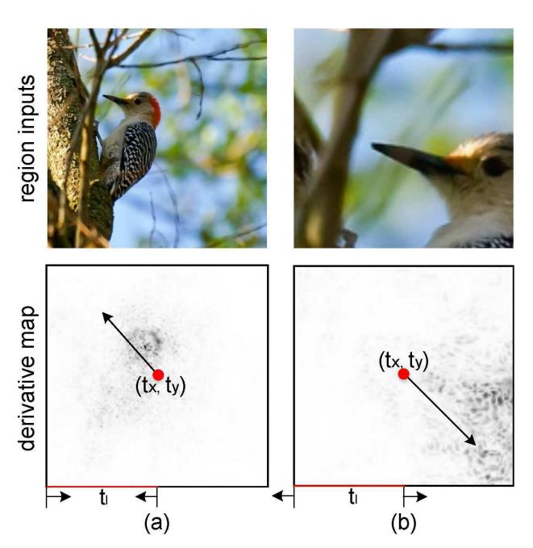

细粒度：RA-CNN¶
综述¶
会议时间：IEEE Conference on Computer Vision and Pattern Recognition 2017 (CVPR, 2017)
论文地址：https://openaccess.thecvf.com/content_cvpr_2017/papers/Fu_Look_Closer_to_CVPR_2017_paper.pdf
源码地址(PyTorch版本)：https://github.com/jeong-tae/RACNN-pytorch
针对领域：细粒度图像分类(FGVC)
关键词：注意力机制、细粒度识别、多尺度区域定位
主要思想¶
细粒度识别任务主要在于有区分度区域的定位和细粒度特征的学习，现有的方法主要是独立地解决这两个问题，在区域定位的学习中，传统的细粒度识别算法又需要额外的人工标注，这样做不仅工作量大，而且容易受到主观因素的干预。作者发现区域定位和特征学习可以相互促进，提出了循环注意力网络，网络的核心结构是注意力建议子网络(APN模块)，只需要提供图片的标签，就可以让该子网络迭代产生由粗到细的多尺度注意力区域，进一步将其裁剪放大，学习放大后的微小差异，可以有效地提高细粒度特征提取的能力；并且提出了利用尺度内分类损失来优化特征提取能力、利用尺度间排序损失来优化区域定位能力，并且还提出了交替学习的训练策略，让特征提取学习和区域定位学习互相促进，交替优化。
首先原图像输入到网络中，作为粗尺度，经过注意力网络，得到注意力区域，进一步将该区域裁剪放大，得到精细尺度。
网络的主要流程¶
具体流程见下图：
首先，先将原图像经过经典的特征提取网络(流程图中的b1、b2、b3)进行提取特征，得到特征图，具体公式如下：
其中W_c表示特征提取网络的参数，*表示卷积运算，X表示原图像
之后特征图有两个去向，第一是特征图再经过全连接层(流程图中的c1、c2、c3)以及softmax函数，得到第一尺度图像的预测概率；第二是通过对原特征图进行某种运算，得到图像的注意力区域，注意力区域可以近似为由三个参数确定的正方形，具体表达式如下：
得到注意力区域之后，我们就可以以更高的分辨率关注那些有区分度的区域，将原图像进行裁剪放大，放大图像的微小差异，从而更好地提取图像的细粒度特征。为了能让注意力区域的定位过程在训练中得到优化，即让该过程变成一系列的连续函数(只有当函数是连续函数时，才能进行反向传播、更新参数)，作者提出了一种利用二维脉冲函数来近似计算得到注意力区域的方法。
二维脉冲函数——注意力掩模¶
假设原始图像中的左上角是原点，x轴与y轴分别以从左到右、从上到下的方向为正方向，裁剪的矩形区域可以由左上角和右下角两个坐标点表示，两个点的计算公式如下：
当得到注意力区域的坐标时，可以通过该坐标确定一个注意力掩模图，该图与原图像大小一致，图上的数据可以有效地代表原图的注意力区域分布，靠近注意力区域的数据系数趋近于1，远离注意力区域的数据系数趋近于0。最理想的是通过阶跃函数来实现，但由于阶跃函数不连续，因此只能选一个无限接近于阶跃函数的连续函数来生成注意力掩模。在这篇文章中，作者引入了带有系数k的sigmoid函数，该函数定义如下：
k越大，函数图像越陡，当k足够大时，就可以近似成阶跃函数。构建好近似阶跃函数的h(·)时，再构建如下函数，计算得到注意力掩模图：
注意力掩模图计算过程的通俗解释： 定位注意力区域的两个坐标点可以将原图像划分为九个区域，具体见下图
其中⑤号区域为注意力区域，两个蓝点为用于定位区域的坐标点
以x为例：
-
当x<t_{x(tl)}，即坐标点位于①④⑦时，x-t_{x(tl)}<0并且x-t_{x(br)}<0，因此h(x-t_{x(tl)})≈h(x-t_{x(br)})≈0
-
当t_{x(tl)}<x<t_{x(br)}，即坐标点位于②⑤⑧时，x-t_{x(tl)}>0并且x-t_{x(br)}<0，因此h(x-t_{x(tl)})≈1,h(x-t_{x(br)})≈0
-
当t_{x(br)}<x，即坐标点位于③⑥⑨时，x-t_{x(tl)}>0并且x-t_{x(br)}>0，因此h(x-t_{x(tl)})≈h(x-t_{x(br)})≈1
因此，只有当x位于②⑤⑧范围内时，M(·)才有可能不为零；同理，只有当y位于④⑤⑥时，M(·)才有可能不为零。综上所述，只有当x,y同时位于注意力所关注的区域时，注意力掩模图上的数据才趋近于1，否则数据趋近于零，因此，该注意力掩模图可以有效地代表注意力所关注的区域。
由于二维脉冲函数可以将关注区域和坐标点建立起函数解析式，因此在反向传播的过程中，可以很好地优化生成坐标点的过程，即APN网络的参数
裁剪放大¶
基于上述得到的注意力掩模图，首先将原图像与注意力掩模做逐元素点乘操作，让原图只保留注意力所关注的部分，具体公式如下：
其中，⊙表示矩阵的点乘运算、X^{att}表示经过注意力掩模凸显后的图像
经过点乘操作后，原图像的关注区域已经被凸显出来了，但还是难以从图像中提取有效的特征表示，因此，作者首先将关注区域裁剪出来，然后采用了双线性插值映射将原图像的关注区域进一步放大，计算公式如下：
原图经过裁剪放大操作，不仅过滤了无关的区域信息，还凸显了有区分度的部位，放大了微小的差异，有利于下一尺度细粒度特征的学习。
损失函数¶
本文损失函数主要由尺度内分类损失以及尺度间排序损失构成，两个损失交替优化，使网络可以准确地定位注意力区域并且有效地学习细粒度特征的提取
尺度内分类损失¶
尺度内分类损失定义如下：
尺度间排序损失¶
尺度间排序损失定义如下：
两种损失函数对应的功能不同，因此参与的优化过程也不同，尺度内分类损失主要用于特征提取的优化，而尺度间排序损失主要用于注意力区域定位的优化，
训练流程¶
首先，三个尺度的特征提取网络都初始化为VGG19(这里也可以换成其他的模型)，并且加载ImageNet训练好的预训练参数
APN的预训练：
首先对APN网络进行预训练，由于图像经过特征提取后，响应值越高的部位越有可能存在物体，因此，作者利用以下规则确定标准的矩形框： ①提取原图像中最后一个卷积层，通过搜索响应值最高的点确定正方形框的中心点 ②正方形边长为原始图像边长的一半、
确定好标准的关注区域后，再构建损失函数(可以用smooth L1函数)，不断优化APN网络的参数，使其关注区域往响应值高的区域靠拢。
交替训练：
当初始化完APN网络参数时，就到了网络整体参数的训练过程了，具体过程如下：
首先保持APN参数的不变，并且在三个尺度上优化尺度内分类损失，从而达到优化网络的特征提取层和分类层参数的目的；然后再将特征提取层和分类层的参数固定，切换到优化尺度间排序损失，从而优化APN的网络参数。这两个过程是迭代进行的，直到两部分损失在训练过程中不再变化，可以有效地使细粒度特征提取的学习以及注意力区域定位的学习相互促进，共同优化。
APN参数优化原理¶
我们通过计算tx,ty,tl的导数来说明注意力学习的机制，由于这三者有类似的推导过程，因此这里只以tx为例，通过链式法则来计算导数，以图像左上角为原点。
首先，我们计算h(x)的导数，
进一步计算M(·)对tx的偏导，
由图像可知，当x趋近于t_x-t_l，即趋近于注意力区域的左边界时，导数值小于零；当x趋近于t_x+t_l，即趋近于注意力区域的右边界时，导数值大于零，t_x有增大的趋势。因此，可以将M(·)对t_x的偏导总结成如下式子：
同理可以分析得到M(·)对t_y的偏导式子如下：
M(·)对t_l的偏导式子如下：
具体变换效果可以见下图，黑色点为导数值是负的点，即响应值高的点。

补充： ①导数值是负，代表该处的值对最终的损失是负影响，因此该处点的值对最终的分类有重要的积极影响，即该处的点是有区分度的区域，注意力的关注区域应该往这些点上靠拢。 ②响应值高的区域：就是对最终分类有积极影响的区域，往往这些区域对应的权重系数都比较高。
精度对比¶
CUB-200-2011

Stanford Cars
注：以上仅是笔者的个人见解，若有错误，欢迎大家批评指正。
最后一次修改日期：2021年9月29日